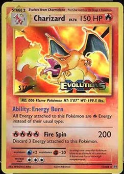

Home
Lore
Levels
Charizard Evolution Stages

Select Charizard's Evolution Stage:
Charmander
Charmeleon
Charizard
Charizard:
The final stage of Charmander’s evolution. Charizard is a mighty dragon-like Pokémon capable of flying and breathing intense flames. Despite its fierce appearance, it is loyal and fights valiantly in battles.